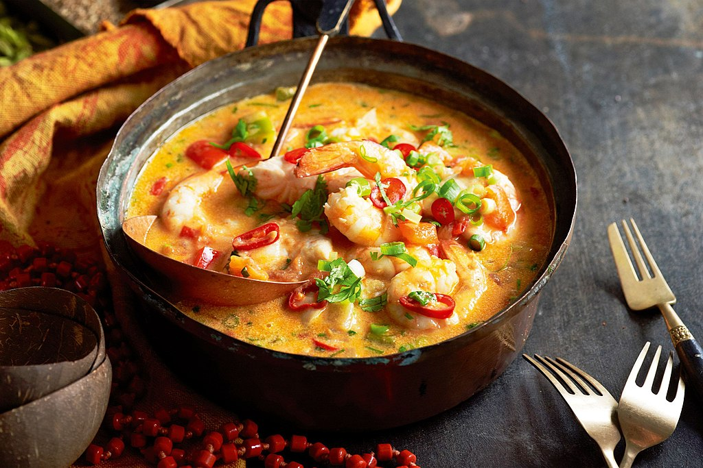
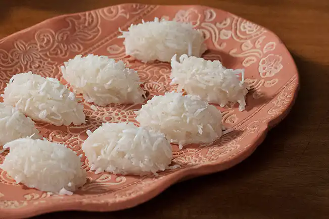
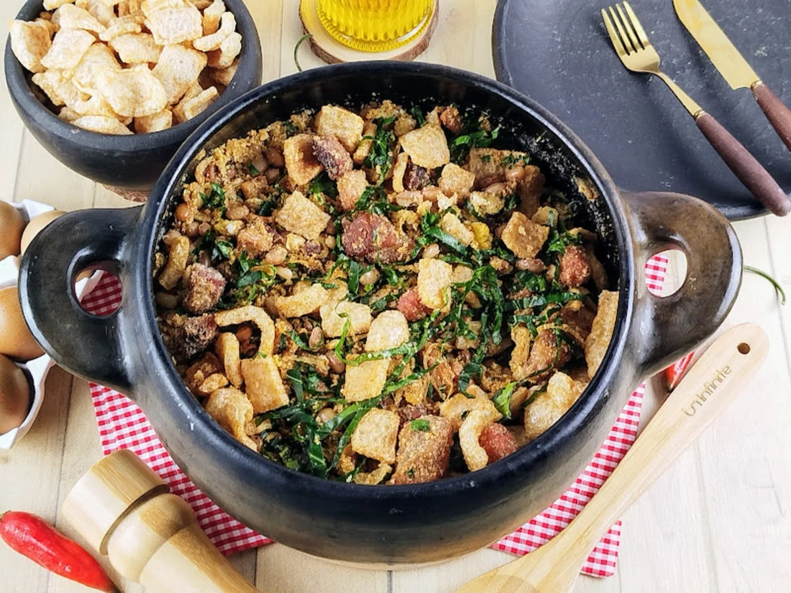
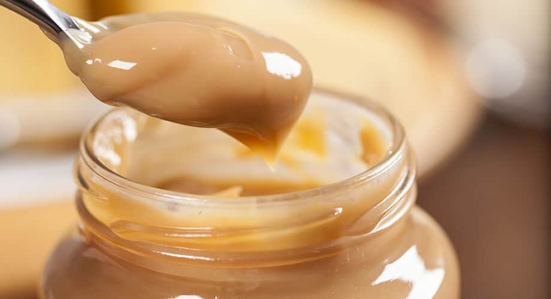

Pelourinho (Salvador, BA)
Prato Principal

Encontrar uma boa moqueca no Pelourinho, o coração histórico de Salvador, é uma experiência essencial. Existem opções que vão desde o buffet pedagógico do Senac até restaurantes charmosos escondidos em casarões coloniais.
Sobremesa

A cocada no Pelourinho é uma experiência icônica, destacando-se a tradicional cocada fresca, muitas vezes servida assada com rapadura e sorvete. Restaurantes como o Coliseu e a sorveteria A Cubana são locais populares para provar essa iguaria típica, que também está disponível em versões de sabores, como a de milho verde.
Pedra do Sal (Rio de Janeiro, RJ)
Prato Principal

A famosa Roda de Samba da Pedra do Sal, no Rio de Janeiro, ocorre tradicionalmente às segundas-feiras, a partir das 19h. Embora seja mais conhecida pelo samba e bares no entorno, o local é um reduto cultural com opções de comida, incluindo feijoada em eventos específicos ou bares próximos, especialmente nos dias de roda.
Sobremesa

Ambulantes na famosa roda de samba da Pedra do Sal, no Rio de Janeiro, comercializam doces como "brigadeiro mágico", bombons e pipocas gourmet, além de drinques, durante as noites de samba.
Ouro Preto (Minas Gerais, MG)
Prato Principal

O feijão tropeiro é um dos pratos mais tradicionais e imperdíveis em Ouro Preto, MG, servido em diversos restaurantes históricos como o Bené da Flauta, Casa do Ouvidor e Contos de Réis. A receita clássica combina feijão, farinha de mandioca, linguiça, torresmo, ovos e couve, sendo uma experiência autêntica da culinária mineira.
Sobremesa

O doce de leite artesanal em Ouro Preto (MG) é uma iguaria tradicional, destacando-se o Vila Rica (em barra e cubos) e o produzido por Dona Marlene (taiado). Outras opções de alta qualidade na região incluem o Rocca (estilo argentino) e o tradicional doce de São Bartolomeu.